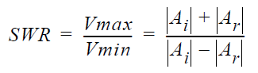
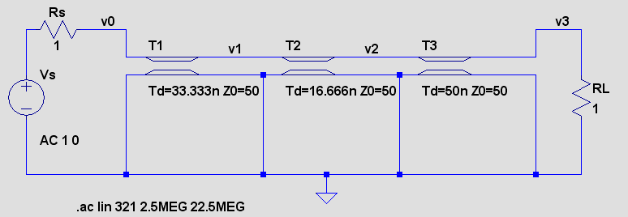
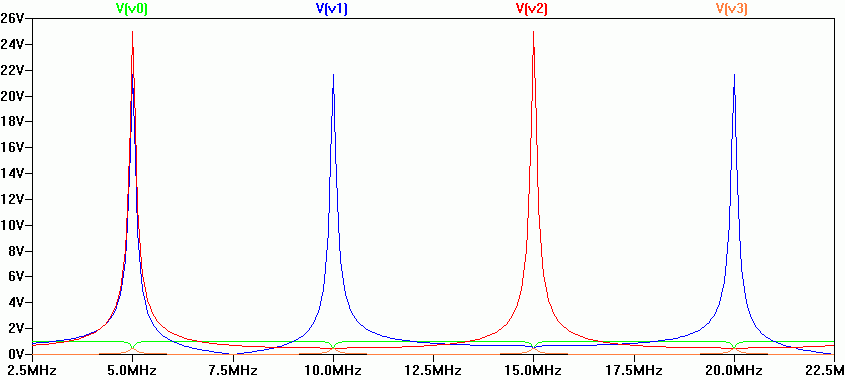
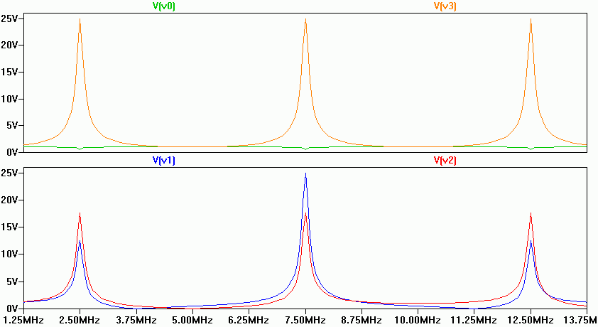

2. Standing Waves
© Jean-Louis Noullet 2013-20172.1 Signal Decomposition
In presence of reflexions, in sinewave steady state mode (AC), there may be some locations along the line where the incident signal and the reflected signal are in phase, which causes their amplitudes to add up.
Similarly, there may be some locations where they are in opposition (180° phase difference) and their amplitudes subtract one from the other.
Similarly, there may be some locations where they are in opposition (180° phase difference) and their amplitudes subtract one from the other.
- The locations where the resulting amplitude is minimal are said nodes
- The locations where the resulting amplitude is maximal are said antinodes
In the general case, the total signal may be decomposed into :
- a standing wave or stationary wave, the amplitude of which depends on the distance from the reflexion point
- a traveling wave or progressive wave, the amplitude of which is independent of the location

This phenomenon may be described by means of the Standing Wave Ratio (SWR), which is the ratio of the maximum amplitude to the minimum amplitude of the total signal, observed along the line.
The SWR can easily be expressed as a function of the reflexion coefficient S, provided that there is a reflexion at only one end of the line.
This phenomenon may be described by means of the Standing Wave Ratio (SWR), which is the ratio of the maximum amplitude to the minimum amplitude of the total signal, observed along the line.
2.1 The line as a Resonator
If a one-dimension propagation medium exhibits reflexion at both ends, the amplitude of the standing waves may exceed the value of the incident signal for some frequencies, which may be considered as a resonance.This phenomenon has been used for centuries in musical instruments. A more recent application of this is the LASER.
This is also observed on 2-dimension media (vibrating membrane, liquid surface) and 3-dimension media (resonating cavity).
Example N°8
We still consider a line of a total delay 100ns, with a voltage measurement v1 at 1/3 the length, and another v2 at half the length. Both ends are loaded with 1 Ohm, which causes a reflexion coefficient of -0.96 at each end. 
- At 5 MHz, we observe a maximum (antinode) at the middle of the line, with an overvoltage factor of 25. There is a node at each end.
- At 10 MHz, we observe a node at each end and one in the middle, while antinodes should be at 1/4 and 3/4 of the total length.
- At 15 MHz, we see an antinode at the middle and a node at 1/3 the length.

By zooming over v0 and v3, we observe that at multiples of 5 MHz, the line impedance is exactly 1 Ohm at each end, which corresponds to 1 or more complete turns on the Smith Chart.
A transmission line with reflexion coefficients of the same sign at both ends is said a half-wave line, because its fundamental resonance frequency is the one for which its length is half the wavelength.
A vibrating string is the classical example of a half-wave line (source Wikipedia)
Example N°9

We still use a line of a total delay 100ns, with a voltage measurement at 1/3 the length, and another at half the length. The left end is driven with a 1-ohm source (S=-0.96), while the other end is loaded with 2500 Ohms (S=0.96). 
- At 2.5 MHz, we see a node at the left end, an antinode at the right end
- At 7.5 MHz too, with an additional antinode at 1/3
- At 12.5 MHz: same as at 2.5 MHz
At these specific frequencies, the line input impedance is 1 Ohm, which is the transform of RL=2500 Ohms by a half-turn (or N+1/2 turns) on the Smith chart.
Then its output impedance is 2500 Ohms, so it appears that at these specific frequencies, this line performs an impedance matching between a 1-Ohm source and a 2500-Ohm load.
A transmission line with reflexion coefficients of opposite signs at the ends is said a quarter-wave line, because its fundamental resonance frequency is the one for which its length is 1/4 of the wavelength.
Such a line may be used for impedance matching between two ports of impedances Z1 and Z2, provided that (Z0)2 = Z1.Z2